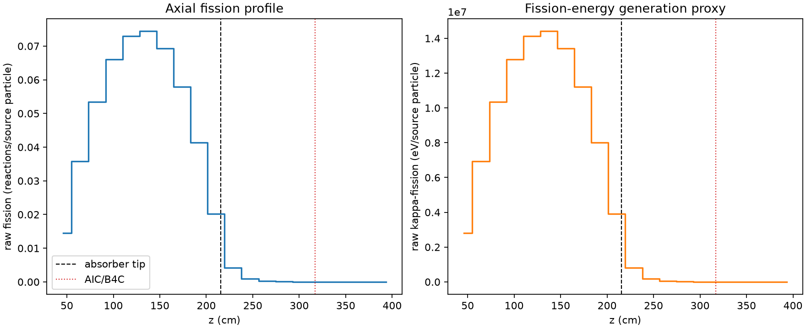
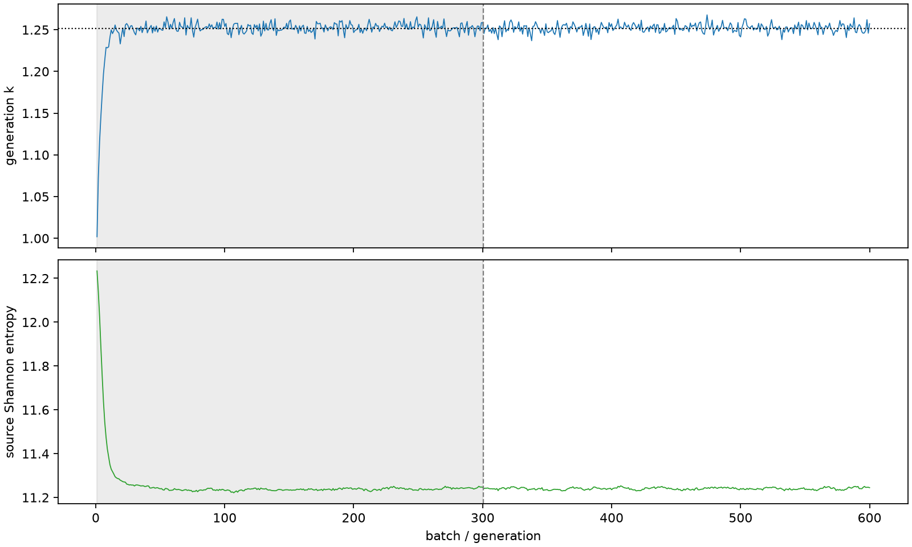

| field | value |
|---|---|
| experiment | V2-STAGE_256_OGRENCI_03-0027 |
| k | 1.2518255120742934 |
| MC standard error | 0.0001899368368136557 |
| seconds | 939.0509867279907 |
| acceptance | not_assessed |
| convergence | review_required |
Completed is output integrity only; physical and statistical review required. Zero tallies do not prove zero production or zero uncertainty.
| diagnostic | value |
|---|---|
| geometric fuel voxels | 5280 |
| zero fission tally voxels | 651 |
| low signal fuel voxels | 1684 |
| low signal fission share | 8.793608732855467e-05 |
| low signal kappa share | 8.796902629971148e-05 |
| important fission share | 0.9500235176318159 |
| previous filter included | 3596 |
| duration estimate s | 1562.5173488400023 |
| actual minus estimate s | -623.4663621120117 |
| fission relative MC error | statistics |
|---|---|
| all_geometric_fuel | {"voxels": 5280, "positive_mean_voxels": 4629, "zero_mean_voxels": 651, "undefined_relative_error_voxels": 651, "median": 0.01236829687721907, "p95": 0.9270864322169754, "maximum": 1.0000000000000002} |
| low_signal | {"voxels": 1684, "positive_mean_voxels": 1033, "zero_mean_voxels": 651, "undefined_relative_error_voxels": 651, "median": 0.5693549880120967, "p95": 1.0, "maximum": 1.0000000000000002} |
| important_95pct | {"voxels": 2301, "positive_mean_voxels": 2301, "zero_mean_voxels": 0, "undefined_relative_error_voxels": 0, "median": 0.007034151611543762, "p95": 0.01159665111531057, "maximum": 0.014147000909694516} |
| outside_previous_filter | {"voxels": 1684, "positive_mean_voxels": 1033, "zero_mean_voxels": 651, "undefined_relative_error_voxels": 651, "median": 0.5693549880120967, "p95": 1.0, "maximum": 1.0000000000000002} |
| kappa_fission relative MC error | statistics |
|---|---|
| all_geometric_fuel | {"voxels": 5280, "positive_mean_voxels": 4629, "zero_mean_voxels": 651, "undefined_relative_error_voxels": 651, "median": 0.01235434881415309, "p95": 0.9274313849942993, "maximum": 1.0000000000000002} |
| low_signal | {"voxels": 1684, "positive_mean_voxels": 1033, "zero_mean_voxels": 651, "undefined_relative_error_voxels": 651, "median": 0.5685363105064851, "p95": 1.0, "maximum": 1.0000000000000002} |
| important_95pct | {"voxels": 2301, "positive_mean_voxels": 2301, "zero_mean_voxels": 0, "undefined_relative_error_voxels": 0, "median": 0.007026183016825124, "p95": 0.011582948817904613, "maximum": 0.014129398212370208} |
| outside_previous_filter | {"voxels": 1684, "positive_mean_voxels": 1033, "zero_mean_voxels": 651, "undefined_relative_error_voxels": 651, "median": 0.5685363105064851, "p95": 1.0, "maximum": 1.0000000000000002} |
| axial bin | fission share | kappa-fission share |
|---|---|---|
| 1 | 0.028241611312265807 | 0.028242942046870667 |
| 2 | 0.06990719972760982 | 0.06990700476840817 |
| 3 | 0.10450237757882062 | 0.10450161070321107 |
| 4 | 0.1291278104339004 | 0.12912679548218087 |
| 5 | 0.14272382289229024 | 0.14272274698884618 |
| 6 | 0.14551034899262952 | 0.1455093480840015 |
| 7 | 0.13543909374502025 | 0.13543809585928773 |
| 8 | 0.11331106203629357 | 0.11331020472895434 |
| 9 | 0.08100624397872883 | 0.08100568877812035 |
| 10 | 0.03949829440172852 | 0.039499632937718604 |
| 11 | 0.008192910290439583 | 0.00819571229685224 |
| 12 | 0.0019165657136791519 | 0.001917312611941866 |
| 13 | 0.0004617479883064834 | 0.00046192937445594724 |
| 14 | 0.00011851170329072706 | 0.00011855844153793906 |
| 15 | 3.114731140114484e-05 | 3.1159408712150974e-05 |
| 16 | 9.43011582201876e-06 | 9.434290382667625e-06 |
| 17 | 1.5460312507881908e-06 | 1.5469509945225466e-06 |
| 18 | 1.5476503561154783e-07 | 1.5501148830842434e-07 |
| 19 | 2.118533039935782e-08 | 2.1522092350492773e-08 |
| 20 | 9.979615670274267e-08 | 9.971394251970369e-08 |
Histories include the inactive-to-active transition at batch 300. kappa-fission approximates fission energy production, not total heat deposition.

